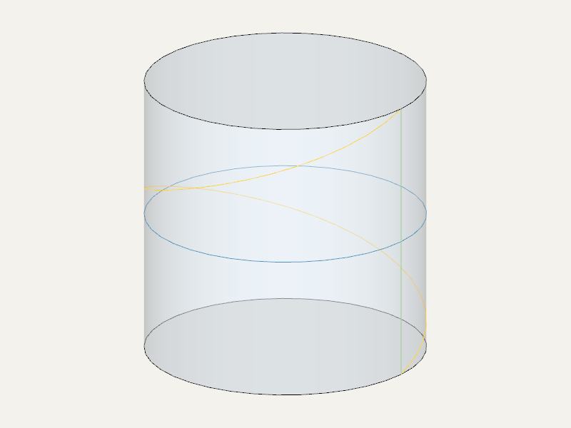

Анализ поверхностей
Surface задаёт поверхность, а Face — ограниченную область на ней. Например, боковая грань цилиндра ограничена по высоте, а её цилиндрическая поверхность продолжается в обе стороны.
Получение поверхности
face.surface() возвращает поверхность грани. Для построения цилиндрической поверхности вокруг оси Z есть cylinder_surface(radius).
from zencad import *
plane = rectangle(20, 10).surface()
point = plane.point(5, 3)
normal = plane.normal(5, 3)
assert abs(float(point.z)) < 1e-7
assert normal.value() == (0, 0, 1)
Параметры и нормаль
Точка поверхности задаётся двумя параметрами u, v. Их смысл зависит от поверхности: у цилиндра u — угол в радианах, v — высота вдоль Z.
| Метод | Результат |
|---|---|
surface.point(u, v) |
Точка Point3 |
surface.normal(u, v) |
Единичная нормаль Vector3 |
surface.u_range(), surface.v_range() |
Диапазоны параметров с полями .lower, .upper |
surface.u_iso(u) |
Кривая при постоянном u |
surface.v_iso(v) |
Кривая при постоянном v |
Диапазоны относятся к поверхности, а не к границам грани; они могут быть бесконечными. У Face нормаль можно запросить напрямую: face.normal(u, v). Без аргументов используются u=0, v=0.
Кривая на поверхности
surface.map(curve2) переносит двумерную кривую из пространства параметров (u, v) на поверхность и возвращает Edge. У цилиндра наклонный отрезок в (u, v) превращается в винтовую линию.
В примере оранжевым показана винтовая линия, зелёным — образующая, синим — окружность на высоте 10:
from zencad import *
surface = cylinder_surface(10)
uv_line = segment2(point2(0, 0), point2(deg(360), 20))
helix = surface.map(uv_line)
meridian = surface.u_iso(0).edge((0, 20))
parallel = surface.v_iso(10).edge()
display(cylinder(10, 20), color=Color(0.65, 0.75, 0.85, 0.7))
display(helix).set_color(orange, wire_color=orange)
display(meridian).set_color(green, wire_color=green)
display(parallel).set_color(blue, wire_color=blue)
show()

Изолинии возвращаются как Curve. Метод .edge() создаёт отображаемое ребро; для бесконечной кривой укажите диапазон, например .edge((0, 20)).
Поверхность также можно построить движением профиля по траектории.